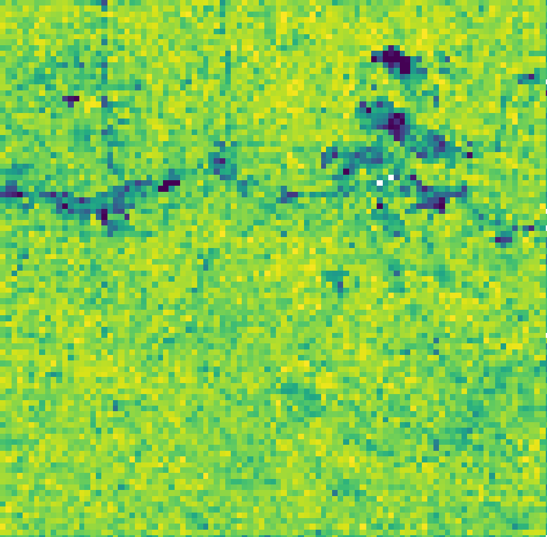
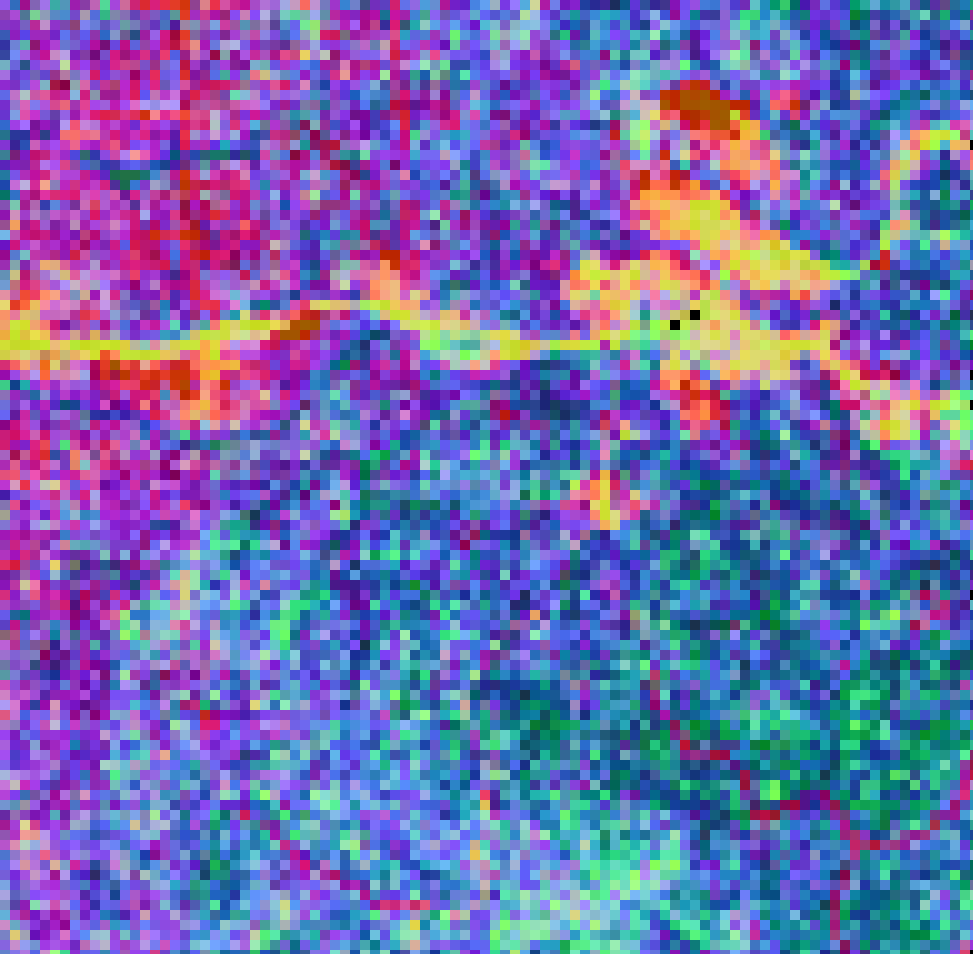
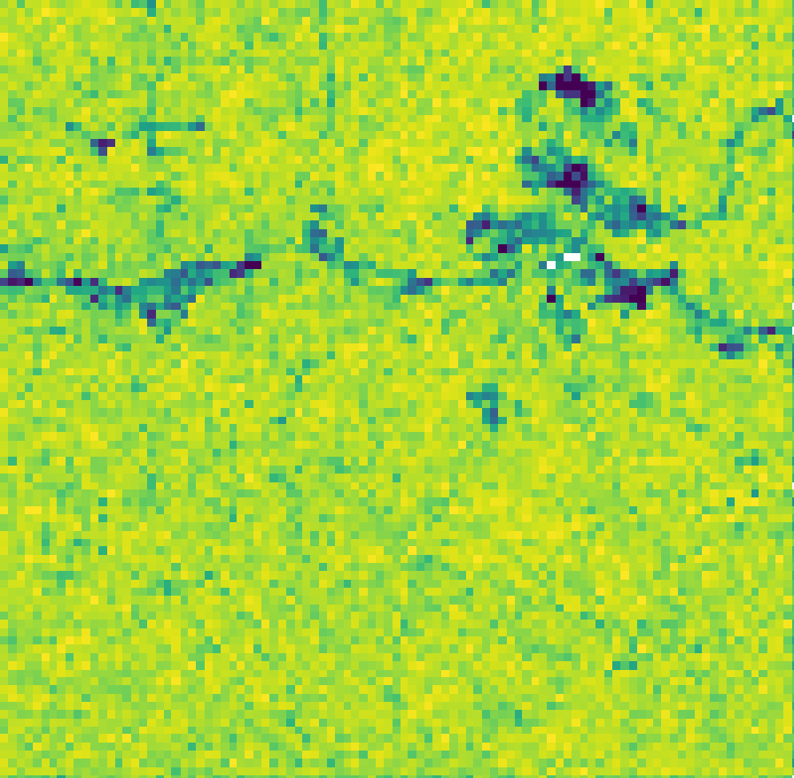
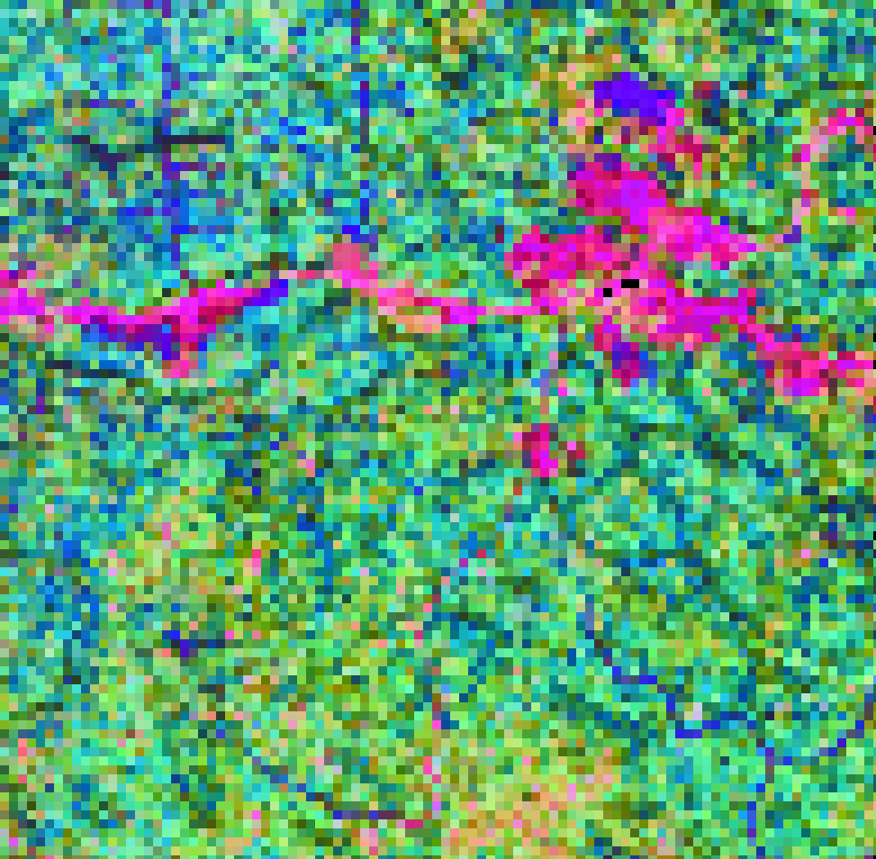

vignettes/biodivMapR_03.Rmd
biodivMapR_03.RmdOnce spectral features are computed from optical data, they can be
used as input variables in biodivMapR.
biodivMapR v2 provides a simplified procedure compared
to biodivMapR v1. A unique function named
biodivMapR_full runs the full workflow and produces a
limited set of outputs.
SPCA was previously computed and the relevant spectral features were
identified based on visual interpretation. This selection of components
will be used here to produce diversity maps with
biodivMapR. The SPCA file is a unique raster file stacking
all components. biodivMapR needs the path for the stacked
data as well as the list of selected features. The mask previously
computed is also used.
# 1- define biodivMapR output directory
output_dir_PCA2 <- file.path('./biodivMapR/SPCA')
dir.create(output_dir_PCA2, showWarnings = F, recursive = T)
# 2- define parameters for biodivMapR
window_size <- 10 # window side size for computation of spectral diversity
nb_clusters <- 50 # nb of clusters (spectral species)
# 3- define path for intermediate variables to be saved
# - information related to kmeans clustering defining spectral species
Kmeans_info_save <- file.path(output_dir_PCA2,'Kmeans_info.RData')
# - information related to beta diversity mapping (BC dissimilarity + PCoA)
Beta_info_save <- file.path(output_dir_PCA2,'Beta_info.RData')
# 4- adjust parameters for multithread & computational efficiency
maxRows <- 1000 # nb of lines processed at once (adjust based on RAM available)
nbCPU <- 4 # nb of threads for parallel processing
# 5- apply biodivMapR
selectedPC <- c(1,5,6)
ab_info_SPCA <- biodivMapR_full(input_raster_path = PCA_Output$PCA_Files$PCA,
input_mask_path = mask_path_PCA,
output_dir = output_dir_PCA2,
selected_bands = selectedPC,
window_size = window_size,
nb_clusters = nb_clusters,
Kmeans_info_save = Kmeans_info_save,
Beta_info_save = Beta_info_save,
maxRows = maxRows, nbCPU = nbCPU)Here, ab_info_SPCA includes two lists:
Kmeans_info, which gathers all information related
to the k-means clustering: centroid, min and max values for each
feature
Beta_info, which gathers all information related to
the computation of the beta diversity
These lists are saved as Rdata files corresponding to
the files defined by Kmeans_info_save and
Beta_info_save. These files can then be used for an
independent process with biodivMapR_full. The path for
these files can then be provided for input variables
Kmeans_info_read, Beta_info_read.
biodivMapR will not recompute this information, if user
provides a valid path for Kmeans_info and
Beta_info. This option is interesting when adjusting
Kmeans_info and Beta_info for a region
including multiple tiles, and processing each tile independently.
and diversity maps produced from the analysis of selected PCs are displayed below.
|  |  |
biodivMapR
Spectral indices computed previously will be used here to produce
diversity maps with biodivMapR. Each spectral index was
saved as an individual raster file. biodivMapR needs a list
of paths for input features and corresponding names. The mask previously
computed based on interquartile ranges of spectral indices is also
used.
# 1- define biodivMapR output directory
output_dir_SI2 <- file.path('./biodivMapR/SpectralIndices')
dir.create(output_dir_SI2, showWarnings = F, recursive = T)
# 2- define parameters for biodivMapR
window_size <- 10 # window side size for computation of spectral diversity
nb_clusters <- 50 # nb of clusters (spectral species)
# 3- define path for intermediate variables to be saved
# - information related to kmeans clustering defining spectral species
Kmeans_info_save <- file.path(output_dir_SI2,'Kmeans_info.RData')
# - information related to beta diversity mapping (BC dissimilarity + PCoA)
Beta_info_save <- file.path(output_dir_SI2,'Beta_info.RData')
# 4- adjust parameters for multithread & computational efficiency
maxRows <- 1000 # nb of lines processed at once (adjust based on RAM available)
nbCPU <- 4 # nb of threads for parallel processing
# 4- apply biodivMapR
ab_info_SI <- biodivMapR_full(input_raster_path = SI_path,
input_mask_path = mask_path_SI,
output_dir = output_dir_SI2,
window_size = window_size,
nb_clusters = nb_clusters,
Kmeans_info_save = Kmeans_info_save,
Beta_info_save = Beta_info_save,
maxRows = maxRows, nbCPU = nbCPU)|  |  |
The validation can then be performed if ground information is available Validation is described in this tutorial.